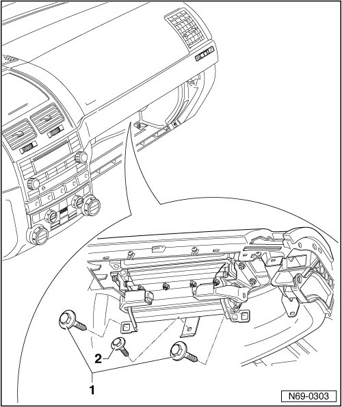
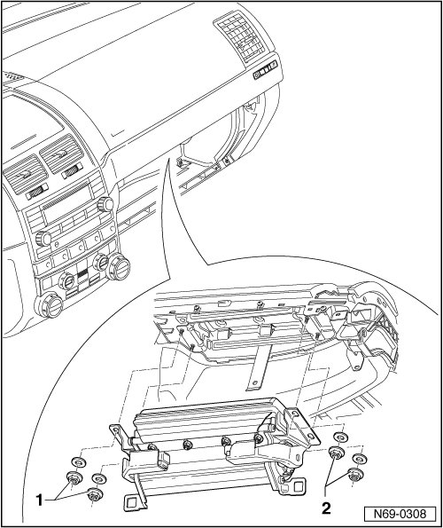
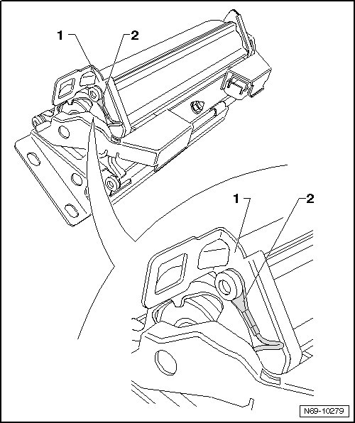
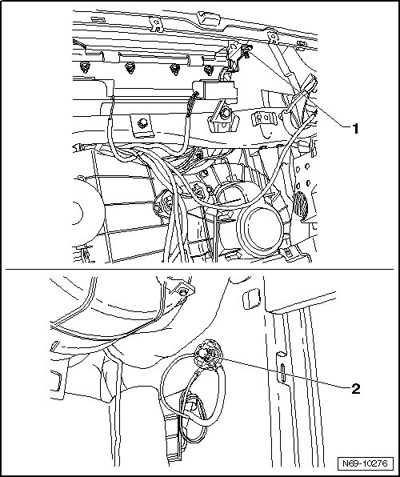

Passenger Airbag
Passenger Airbag
Removing
CAUTION!
Observe safety precautions for working on airbags --> [ Airbag Safety Precautions ] Technician Safety Information.
- Disconnect the vehicle batteries
- Remove glove compartment door --> [ Glove Compartment Door ] Glove Compartment Door.
- Remove vehicle wallet compartment --> [ Vehicle Wallet Compartment ] Vehicle Wallet Compartment.
- Remove two bolts - 1 - (8 Nm).
• Bolt - 2 - is shown removed. Removing it is not necessary.

CAUTION!
Electrostatic discharges can lead to an unintended deployment of the airbag. Therefore the technician must discharge static electricity from the body before separating the ignition and ground wiring. This is done e.g. by briefly touching the body or the door striker or pin.
- Disconnect wiring harnesses from front passenger airbag.
- Remove 2 nuts - 1 - and - 2 - (8 Nm) from each side.
• The washers shown in the figure have been discontinued.

Installing
- Perform the steps used for removal in reverse order.
Check whether an additional ground cable must be routed in the vehicle:
CAUTION!
If a passenger airbag is replaced, an additional ground cable must be routed in the vehicle in some cases.
- Check whether a ground cable - 2 - is routed on passenger airbag housing - 1 -.

On a passenger airbag without ground cable, route an additional ground cable in vehicle:
• For the following work, use a cable (cross section 1 mm, length 600 mm) from the Wiring Harness Repair Kit (VAS 1978) or Wiring Harness Repair Kit (VAS 1978A).
- Secure end of ground line with nut - 1 - on right side of passenger airbag.
- Route ground line correctly to right side of passenger footwell.
• Lengthen the ground cable as needed with suitable instruments from the Wiring Harness Repair Kit (VAS 1978) or the Wiring Harness Repair Kit (VAS 1978A).
- Secure other end of ground cable to ground pin - 2 -.

- Switch the ignition on.
CAUTION!
Make sure that no persons are in the vehicle.
- Connect battery ground (GND) strap --> Electrical Equipment 27 Removal and Installation